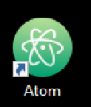
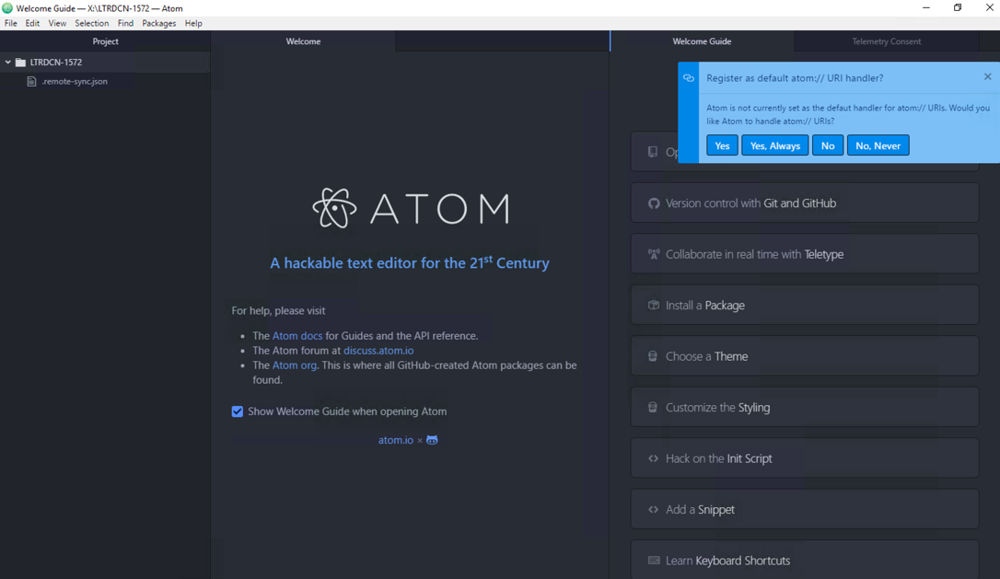
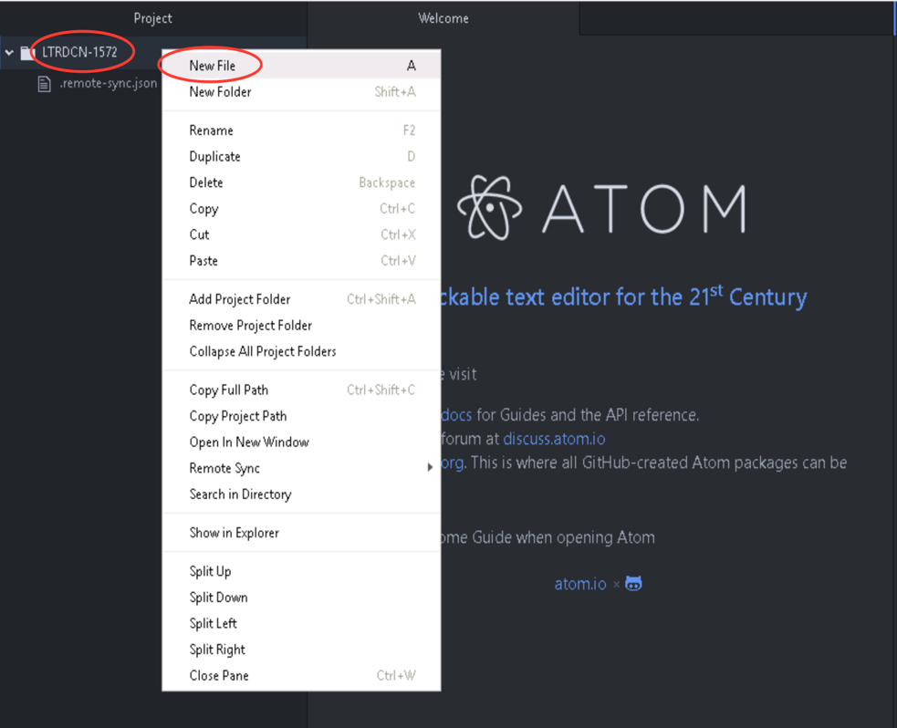
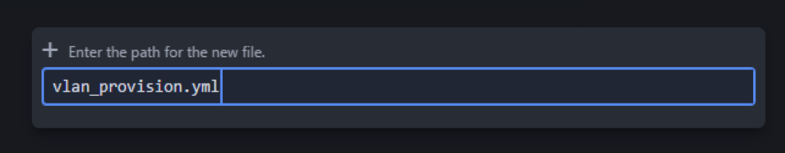
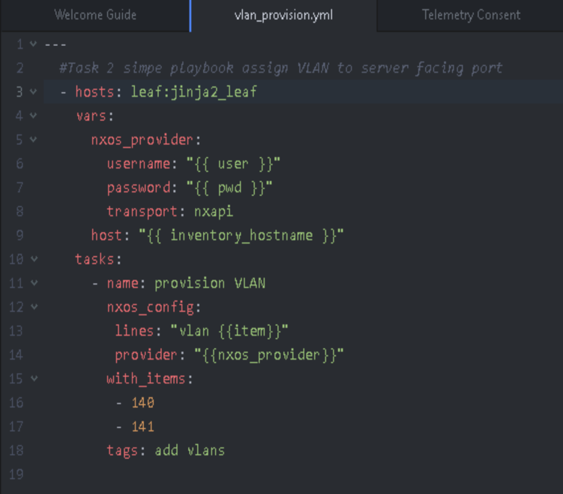
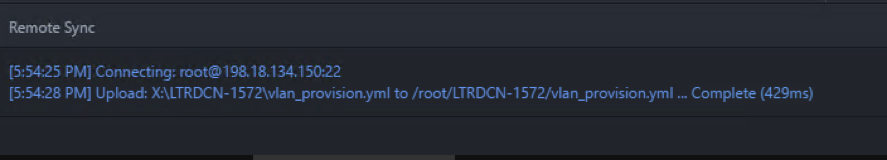
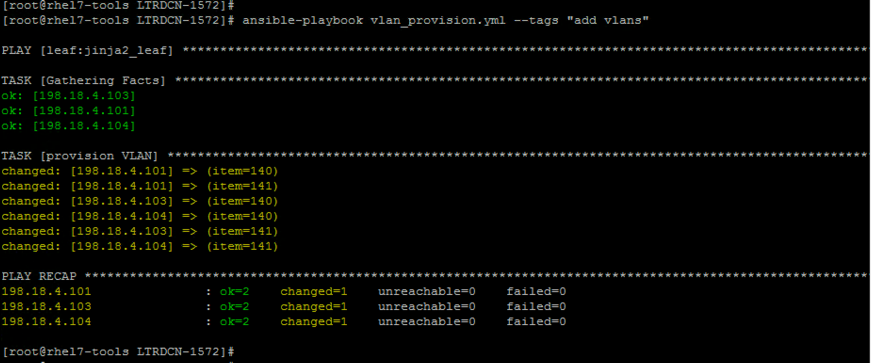
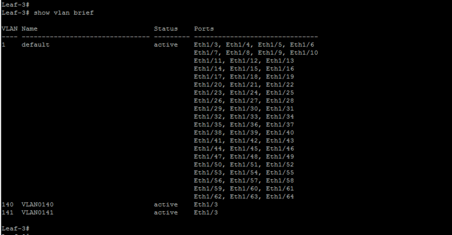
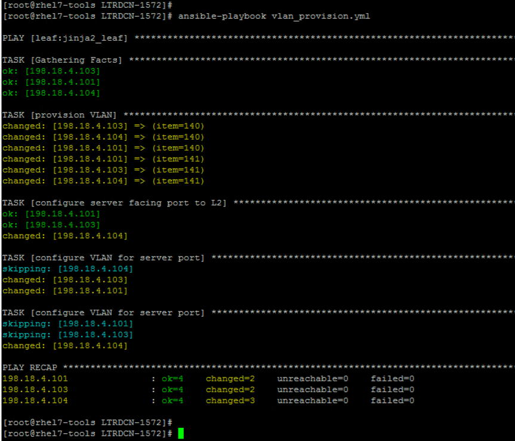

Task 2: First Simple Ansible Playbook
In this section, we will create the first Ansible Playbook. In the playbook, we will configure VLANs on leaf switches, and assign VLANs to the server facing port.
You will learn create variables inside playbook, learn simple loop using “with_items”, learn simple logical using “when” and learn “tags” to isolate tasks from whole playbook.
Step 1: Using "Atom" text Editor
-
Open “Atom” text editor by double click the icon on desktop. Atom is the recommended text editor for this lab:

-
After opening ATOM, Click “No Never” to the “Register as default atom:// URI handlre” message as show below:

Step 2: Atom folder
- After opening ATOM, there should be a folder in the left pane named “LTRDCN-1572.”
-
Right click the pre-configured project folder ‘LTRDCN-1572’ and select
New File
-
Name the new file
vlan_provision.ymland hit enter. This will creat the new file:
Step 3: Define variables, tasks for playbook
In this step, we are going to define the scope, variable for playbook and tasks
-
In the opened window for ‘vlan_provision.yml’ file, enter the below content. NOTE: YAML is space sensitive. Hence be careful with the spaces in below section.
--- #Task 2: Simple playbook assign VLAN to server facing port - hosts: leaf:jinja2_leaf vars: nxos_provider: username: "{{ user }}" password: "{{ pwd }}" transport: nxapi host: "{{ inventory_hostname }}" -
“hosts” defines the scope of this playbook applies to all switches in group ‘leaf’ and ‘jinja2_leaf’.
- Note you can review the IP addresses of the three (2) “leaf” and one (1) “jinja2_leaf” in the “hosts” file (configured in previous steps). The IP addresses are:
- jinja2_leaf: 198.18.4.104
- leaf: 198.18.4.101
- leaf: 198.18.4.103
- Note you can review the IP addresses of the three (2) “leaf” and one (1) “jinja2_leaf” in the “hosts” file (configured in previous steps). The IP addresses are:
- “vars” defines one variable “nxos_provider” that will be used in this playbook.
- “nxos_provider” is variable that includes all value that will be used for connection and autnentication.
- This variable will be referenced in playbook via “provider” argument.
Step 4: VLAN tasks in playbook
-
Continue to add below tasks on the playbook:
tasks: - name: provision VLAN nxos_config: lines: "vlan {{item}}" provider: "{{nxos_provider}}" with_items: - 140 - 141 tags: add vlans -
Multiple plays can be defined in one playbook under“tasks”, each starts with “-“ .
- This kind of play creates multiple VLANs using nxos_config module.
- The “lines” option is used to pass only one configuration command. This commands must be the exact same commands as found in the device running-config.
- Though one or multiple configuration commands can be configured under the “lines” option. For multiple, ordered set of commands can be configured under this “line” section.
-
At the end of this play, we use “tags” to name the play “add vlans”. This is useful to run a specific part of the configuration without running whole playbook.

NOTE: Formatting is extremely important when working with Ansible. Ansible playbook would return errors if the spaces are not properly aligned or formatting is not correct
-
Click “File” “Save” . This will save the playbook, and also ftp the playbook to Ansible server using pre-configured “remote-sync” package.

NOTE: Once the Save button is pressed, then at the lower part of ATOM app, you will see message about connecting to Ansibe host (198.18.134.150) and saving the vlan_provision.yml file
Step 5: Execute playbook
After creating the playbook, it is now time to execute the playbook.
- Before executing the playbook, we will verify the leaf switch if it has any vlan configuration present on it.
-
Login to leaf-3 switch using the Mputty client, or any leaf switch and execute
show vlan briefcommand. This will show us the vlans that currently exist on the leaf switch. As you note from below screenshot only the default VLAN (vlan number 1) is configured:
-
Now, go to mputty, login or launch a new ssh into Ansible node (198.18.134.150)
- Use command
ansible-playbook vlan_provision.yml --tags "add vlans"under folder "LTRDCN-1572" as shown below:[root@rhel7-tools LTRDCN-1572]# ansible-playbook vlan_provision.yml --tags "add vlans"
Note:
- If the playbook fails first time, re-run the playbook again.
-
Make sure to save all the changes in the playbook first before executing the playbook in Ansible

-
After playbook is run successfully, login into leaf 3 again and check if vlan 140 and vlan 141 appears. There would also be a log message on the screen indicating a configuration change was pushed to the device 
Step 6: Server port VLAN tasks in playbook
Now, we have tested our first playbook with basic configuration ( adding 2 VLANS), we are now going to add more tasks in our existing playbook “vlan_provision.yml”
- we will add new plays in the playbook to assign VLANs to server facing port. This time, we will configure VLAN towards the server facing ports
- Go back to ATOM and add the following plays to the existing playbook
- name: configure server facing port to L2 nxos_interface: interface: eth1/3 mode: layer2 provider: "{{nxos_provider}}" - name: configure VLAN for server port when: ("101" in inventory_hostname) or ("103" in inventory_hostname) nxos_switchport: interface: eth1/3 mode: access access_vlan: 140 provider: "{{nxos_provider}}" - name: configure VLAN for server port when: ("102" in inventory_hostname) or ("104" in inventory_hostname) nxos_switchport: interface: eth1/3 mode: access access_vlan: 141 provider: "{{nxos_provider}}"
In this new play, we used nxos module “nxos_interface” and “nxos_switchport”.
- “nxos_interface” provides the capability to manage the physical attributes of an interface
- In this example, it is used to configure “layer 2” on interface Ethernet 1/3
- “nxos_switchport” provides the capability to manage the Layer 2 switchport attributes
- In this example, it is used to configuration it is used to configure mode access on Ethernet ports 1/3
- We used “when” argument to provide little logic of the play.
- In our example, the playbook assign VLAN 140 on leaf1 and leaf3 switches; assign VLAN 141 on leaf2 and leaf4 switches.
- Click “File” and “Save” will save the playbook, and also ftp the playbook to Ansible server using pre-configured “remote-sync” package.
Step 7: Execute playbook
Now, we are going to execute the playbook with the command ansible-playbook vlan_provision.yml
- Open MTPuttY and log back into (or launch a new ssh) into “Ansible” node.
-
Execute command “ansible-playbook vlan_provision.yml” in the “LTRDCN-1572” directory as shown below:
[root@rhel7-tools LTRDCN-1572]# ansible-playbook vlan_provision.yml
-
After we push the configuration, login to leaf-3 switch, and check if the server facing port has the access vlan configured with the below command:
show run interface ethernet1/3The output of above command is shown in below screenshot:

Congratulation! You have created your first ansible playbook, automatically provisioned new VLANs and assigned port to new created VLANs using Ansible. Next we are going to create VXLAN Fabric using Ansible.